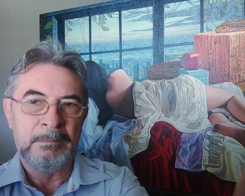

El artista
La relación entre un artista y su obra es profundamente personal y compleja, un viaje que culmina en una mezcla de emociones y satisfacciones. Se crea una expresión de orgullo y conexión íntima con el fruto de nuestra labor.
Cada trazo, cada color, cada figura refleja no solo nuestra habilidad técnica, sino también la pasión y el alma que infundimos en cada pieza.
Es un momento de triunfo, donde el trabajo duro se transforma en una obra de arte que ahora tiene vida propia y puede dialogar con el espectador.